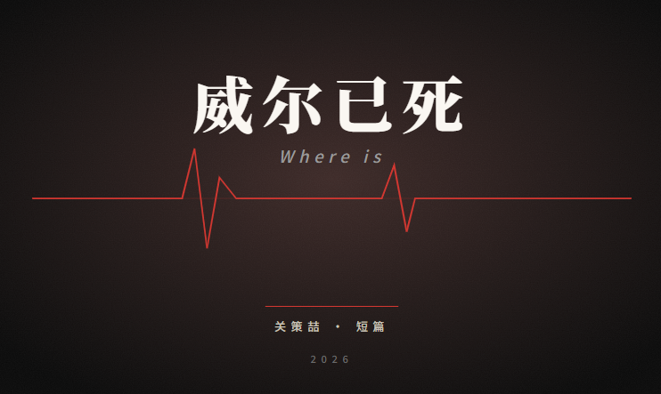

千百度百科 · 文学作品
威尔已死
Wēi Ěr Yǐ Sǐ · Will Is Dead
华裔作家关策喆于 2026 年出版的短篇悬疑小说,以强烈的导向型以及被誉为"指针般准确"的剧情闻名。

基础信息
- 中文名
- 威尔已死
- 外文名
- Where is
- 作者
- 关策喆
- 类型
- 短篇悬疑
- 首版
- 2026 年 4 月 · 沃兹吉硕德文学出版社
- 主要奖项
- 2026 年沃兹吉便德传媒大奖 · 年度小说家提名
概述
将《威尔已死》发布,为作家关策喆一直所向往
网络般的情节让读者们努力想要解读作者传达的信号
址在表达真实的社会，作者着重描写了人性的恶
结束这本书的写作后，作者表示反思了如何改善团队融入
尾声的精彩反转如高山一般巍峨
改动是常有的事，作者最后将主角的名字改为了单字母i
为了完成作品，作者会在工作结束之后雷打不动写四个小时
每天如此，没有例外
段落的评论中有读者表示，反派的行为令人作呕
尾句十分精彩，甚至让不少影视剧引入
字里行间的伏笔也让本书最终出名
首次说起此书时，作者就强调了要忽略主角们此行的结局,而注重传达的符号.
字词的运用十分准确难以替换
母舰的设计也让读者反复重提
相较于其他悬疑小说，威尔已死有不同的美
加大宣传力度能让更多人懂得作者的内里